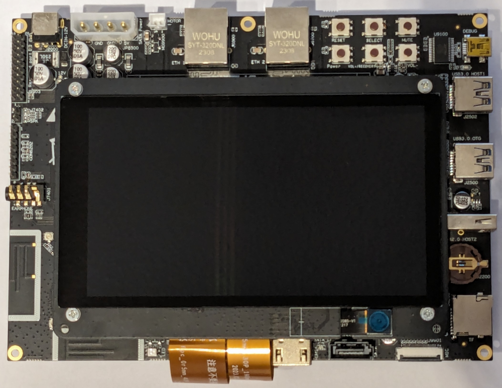

HiHope HH-SCDAYU200 Development Kit
Text from here
Introduction
Based on the Rockchip RK3568, this development kit integrates advanced features such as a dual-core architecture GPU and a high-performance NPU. Complemented by an onboard quad-core 64-bit Cortex-A55 processor which has a frequency of up to 2.0GHz, it ensures robust performance.
The rich set of peripherals ranges from Bluetooth and Wi-Fi to audio, video, camera and a variety of Bosch Sensortec sensors.
The expansion board offers rich expansion interfaces, and supports a variety of video input and output interfaces suited for applications with rich user interface requirements.
It is also equipped with dual Gigabit adaptive RJ45 Ethernet ports, which can meet the needs of NVR, industrial gateway and other multi-network port products.

Specification
Development Board Specification
| Category | Specification |
|---|---|
| SOC Model | Rockchip RK3568 |
| CPU Architecture | Quad-core Cortex-A55 up to 2.0GHz |
| GPU | Mali-G52 GPU |
| Supported APIs | OpenGL ES 1.1/2.0/3.2, OpenCL 2.0, Vulkan 1.1 |
| Video Decoding | Supports 4K at 60fps H.265/H.264/VP9 video decoding |
| Video Encoding | Supports 1080P at 100fps H.265/H.264 video encoding |
| NPU Performance | 0.8TOPs |
| Supported Operations | INT8, INT16, FP16 operations |
| RAM | 2/4GB LPDDR4/LPDDR4x, running at 1600MHz |
| Storage | 16/32 GB |
| Power Input | DC 12V/2A |
| Operating Systems | OpenHarmony |
| Connector Type | SODIMM 314P (MXM 3.0) |
Expansion Board Specification
| Category | Specification |
|---|---|
| HDMI | 1x HDMI2.0(Type-A), supports 4K at 60fps output |
| MIPI | 2x MIPI interface, supports 1920x1080 at 60fps output |
| eDP Interface | 1x eDP interface, supports 2K at 60fps output |
| I2S/TDM/PDM | 1x 8 channel I2S/TDM/PDM |
| Ethernet | 2x GMAC(10/100/1000M) |
| SDIO | Supports Wi-Fi 5G/2.5G, BT4.2 |
| Camera Interface | MIPI-CSI2, 1x4-lane/2x2-lane at 2.5Gbps/lane |
| USB | 1x USB2.0 Host, Type-A; 1x USB3.0 Host, Type-A; 1x USB3.0 OTG |
| M.2 Interface | 4G LTE Module |
| PCIe | 1x 2 Lanes PCIe3.0 Connector (RC Mode) |
| SATA | 1x SATA3.0 Connector |
| SDMMC | 1x Micro SD Card3.0 |
| Buttons | 1x Vol+/Recovery; 1x Reset; 1x Power; 1x Vol-; 1x Mute |
| RTC | 1x RTC |
| Infrared | 1x IR |
| LEDs | 3x LED |
| Sensors | Bosch Sensortec BMA456, BMI270 and BMP581 |
| Fan | 1x Fan |
Building
To build Eclipse Oniro for this board the normal quick build procedure has to be used to fetch the needed source code and environment.
During the build step, inside the Docker instance, the target device for the build has to be set to rk3568.
./build.sh --product-name rk3568 --ccache
Flashing
To begin, connect the board to your computer as outlined in the HiHope DAYU200 documentation. Use the USB-C and mini-USB cables included in the kit to connect to the USB 3.0 OTG port and the mini-USB DEBUG port, respectively.
Power on the device by attaching the power cable. Upon successful connection, your serial console should display output similar to:
Bus 002 Device 009: ID 2207:5000 Fuzhou Rockchip Electronics Company "HDC Device"
...
Bus 001 Device 069: ID 0403:6001 Future Technology Devices International, Ltd FT232 Serial (UART) IC
Download the flash.py flashing tool from Gitee using the following commands:
git clone https://gitee.com/hihope_iot/docs.git hihope_iot_docs
mkdir flash && cp -r hihope_iot_docs/HiHope_DAYU200/烧写工具及指南/linux/* flash/
chmod +x flash/flash.py flash/bin/flash.x86_64
To ensure proper device recognition, install the udev rule:
sudo cp flash/etc/udev/rules.d/85-rk3568.rules /etc/udev/rules.d/85-rk3568.rules
Then, either reload udev rules or reboot your system:
udevadm control --reload-rules
After this setup, running flash/flash.py -q should produce the following output, indicating readiness:
maskrom
To enable programming mode on the device, perform the following steps:
- Press and hold
VOL/RECOVERYthenRESETbuttons. - Release
RESETbutton.
Confirm the mode by running lsusb, which should show:
...
Bus 001 Device 070: ID 2207:350a Fuzhou Rockchip Electronics Company USB download gadget
...
$ flash/flash.py -q
loader
Once the above steps are completed successfully, you can proceed to flash the board:
flash/flash.py -a -i ./out/rk3568/packages/phone/images
Connecting to serial console
To read the serial output, ensure the board is correctly connected and powered on. The default baud rate for the HH-SCDAYU200 board is 1500000. You can use minicom or a similar serial terminal:
minicom -D /dev/ttyUSB0 -b 1500000
Reference
The original specification and some hardware description comes form the original (Chinese) HiHope documentation published on Gitee.
More details and purchase options can be found at the manufactures product page.